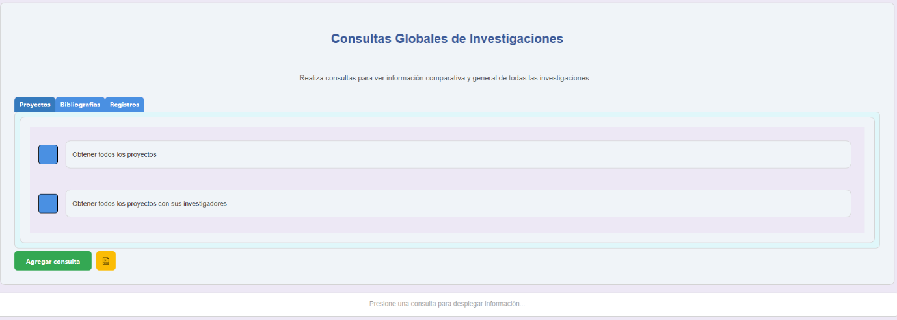
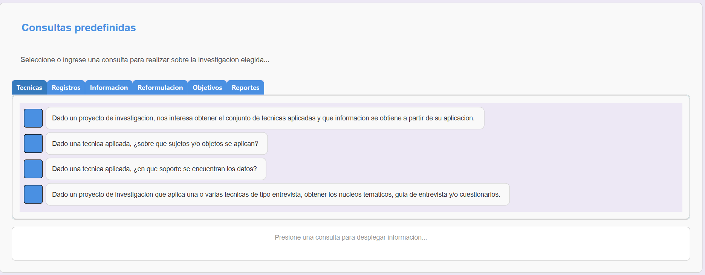
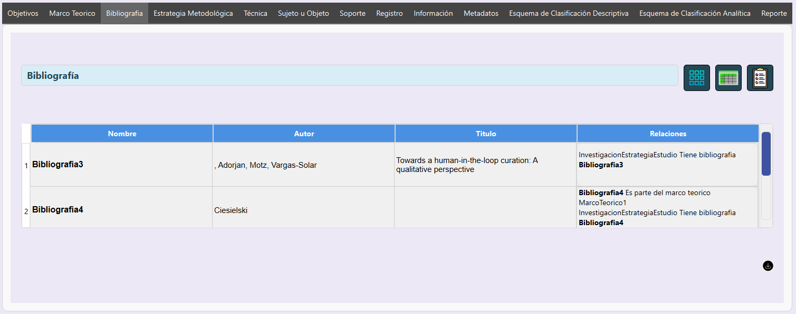

Ontology Viewer como software
Ontology Viewer es una aplicación diseñada para gestionar, explorar y visualizar proyectos de investigación
de manera interactiva y eficiente. Esta herramienta permite a los usuarios explorar los datos y metadatos
ingresados para un proyecto de investigacion, acceder a información detallada interrelacionada a distintas
investigaciones mediante consultas
predefinidas o personalizadas utilizando las ventajas que ofrecen la ontologia sobre la cual todo el sistema
esta montado.
La aplicación simplifica el manejo de datos complejos mediante una interfaz intuitiva y funcionalidades
avanzadas. Los usuarios pueden cargar un repositorio de investigaciones y para tal, visualizar la
informacion registrada, explorar tanto los datos como los metadatos de la misma, obtener las relaciones
entre las distintas clases de informacion y exportar reportes estructurados que facilitan el análisis y la
toma de decisiones.
Funciones principales
Ontology Viewer ofrece una amplia gama de características para optimizar el trabajo con ontologías. Estas
incluyen:
- Carga de repositorio de investigaciones en formato RDF y validación de consistencia.
- Procesos de inferencia y deduccion de nueva informacion.
- Exploración interactiva de los distintos tipos de informacion registrados.
- Consultas personalizadas para extraer información específica.
- Generación de reportes en formato CSV.
Ejemplos prácticos
Con Ontology Viewer, los usuarios pueden:
- Identificar investigadores relacionados con un proyecto de investigación.
- Explorar los objetivos, estrategias metodológicas y hallazgos principales de un proyecto.
- Analizar relaciones complejas entre entidades como técnicas y registros asociados.
Relación entre Ontology Viewer y la Ontología
Base
Ontology Viewer es una herramienta diseñada para explorar y visualizar ontologías de manera interactiva,
permitiendo a los usuarios comprender y analizar los datos estructurados en un dominio específico. En este
caso, la ontología cargada representa proyectos de investigación cualitativa, y su correcta comprensión es
fundamental para utilizar la aplicación de forma efectiva.
La ontología actúa como el núcleo semántico que proporciona estructura y significado a los datos procesados
por Ontology Viewer. La aplicación, a su vez, facilita la navegación, consulta y visualización de estos
datos, haciendo que el análisis sea accesible incluso para usuarios con conocimientos limitados en modelado
semántico.
Relación entre la aplicación y la ontología
Con Ontology Viewer, los usuarios pueden:
- Propósito de la aplicación
- La aplicación está diseñada para cargar repositorios de investigaciones en formato RDF, explorarlas, y
visualizar sus
componentes (clases, propiedades, individuos, y relaciones) de forma interactiva.
- Permite consultar y analizar datos semánticos a través de una interfaz gráfica, ofreciendo
funcionalidades como la visualización de atributos, relaciones y datos inferidos.
- Propósito de la ontología
- La ontología cargada es una representación formal de un dominio específico (investigación cualitativa
en este caso).
- Define las entidades (clases como proyecto_de_investigacion, investigador o tecnica) y las relaciones
entre ellas (como Tiene_objetivo, Posee_metadatos, o Aplica_una_o_varias).
- Conexión
- La ontología alimenta a la aplicación con su estructura, proporcionando las bases de datos semánticas
que el Ontology Viewer procesa, interpreta y presenta al usuario.
- La aplicación facilita el análisis práctico de la ontología al permitir al usuario.
- Navegar por clases e instancias.
- Visualizar atributos y relaciones.
- Consultar datos específicos con SPARQL.
Importancia de comprender la ontología para usar correctamente la aplicación:
Para utilizar Ontology Viewer de manera óptima, es crucial entender cómo está estructurada la ontología de
base. Esto se debe a que:
- Navegación y Contexto: Sin un conocimiento previo de la ontología, un usuario podría
perderse en las estructuras y términos complejos (como clases abstractas, relaciones específicas o nodos
anónimos). Comprender conceptos clave (por ejemplo, qué representa un proyecto_de_investigacion o una
tecnica) proporciona contexto para interpretar correctamente lo que se visualiza en la aplicación.
- Consultas SPARQL: La capacidad de realizar consultas depende del conocimiento de las
clases y propiedades de la ontología. Por ejemplo, saber que Tiene_objetivo conecta un
proyecto_de_investigacion con un objetivo permite construir consultas significativas. Sin este
entendimiento, los usuarios podrían generar consultas incorrectas o sin sentido, reduciendo la utilidad de
la aplicación.
- Interpretación de Relaciones: La ontología define relaciones específicas (como
Es_participante o Relacionado_a_tecnica). Comprender estas relaciones ayuda a interpretar visualizaciones
como grafos interactivos o tablas de atributos generadas por la aplicación. Un usuario informado puede
analizar datos en profundidad, mientras que uno que desconoce la estructura de la ontología podría
malinterpretar las conexiones entre entidades.
- Personalización y Ampliación: Si se desea personalizar la aplicación (por ejemplo,
agregar nuevas consultas o ajustar la visualización), es crucial entender cómo está estructurada la
ontología para alinear las funcionalidades con el modelo semántico.
- Validación de Datos: El usuario puede validar si los datos cargados y las inferencias
realizadas son consistentes con el dominio modelado por la ontología. Esto solo es posible con un
conocimiento básico de su estructura y propósito.
Conclusión:
La ontología es el núcleo semántico que da vida a la aplicación, mientras que la aplicación es la
herramienta práctica que permite interactuar con esa información. Entender la ontología no solo maximiza el
potencial del Ontology Viewer, sino que también asegura que los datos representados sean interpretados y
utilizados de manera correcta y efectiva.
Guía rápida para usar Ontology Viewer
Noviembre 28, 2024 por Equipo de Desarrollo
Ontology Viewer es una herramienta diseñada para explorar y analizar proyectos de investigación previamente
cargados en un archivo RDF siguiento el diseño de clases y relaciones desarrollado en nuestra ontologia. A
continuación, te presentamos una guía rápida para que puedas aprovechar al máximo la aplicación desde el
primer uso.
"Ontology Viewer hace que la recuperacion y visualización de datos relacionados a una o varias
investigaciones sea intuitiva y eficiente para investigadores y gestores de proyectos."
Sigue estos pasos para comenzar:
Pasos iniciales
- Abrir la aplicación: Inicia Ontology Viewer y haz clic en el botón destacado para
cargar una ontología.
- Cargar un repositorio de investigaciones:
- Selecciona el archivo RDF desde tu computadora que contiene el repositorio.
- La aplicación validará la ontología y mostrará un mensaje confirmando que está lista.
- Si la validacion es correcta, la aplicacion iniciara los procesos de inferencia sobre tu
repositorio, buscando generar toda la informacion que pueda deducirse y que no este ya declarada
explicitamente.
- Una vez que este proceso termine, la aplicacion mostrara distintas secciones para explorar las
investigaciones del repositorio.
- Ahora ya esta todo listo para que puedas explorar los distintos proyectos de
investigacion
Distintas formas de exploracion
Ontology Viewer presenta dos formas diferentes para explorar el repositorio de investigacion: Una forma
global (donde puede obtenerse informacion de todas las investigaciones del repositorio) y
otra individual
(donde se permite centrar la vista en un unico proyecto de investigacion y solo ver informacion relacionada
al mismo)
Exploración Global del Repositorio
Debajo del título Consultas Globales de Investigación, verás un cuadro con botones
organizados por
grupos. Cada botón ejecuta una consulta predefinida sobre el repositorio completo. Estas consultas tienen
como fin recuperar información de todas las investigaciones registradas en este repositorio.
Ejecutar una consulta
- Haz clic en un botón para ver resultados relacionados con la consulta
- Ejemplo: "Obtener todos los proyectos con sus investigadores" listará todos los proyectos en el
repositorio y, para cada uno, mostrará también sus investigadores

Exploración Individual por Investigacion
Después de cargar la ontología, se habilitará la seccion Explorar Investigacion
Individual. Esta contiene una lista desplegable con todas las investigaciones que contiene el
repositorio.
Seleccionar una investigacion para explorar
- Haz clic en el combobox para que despliegue toda la lista de investigaciones disponbiles
- Luego de seleccionar una, haz clic en el botón "Explorar" a la derecha.
Información de la Investigación Elegida
Al visualizar un proyecto, aparecerán varias secciones:
- Título de la Investigación
- Nombre grande en la parte superior de la pantalla
- Participantes
- Lista de investigadores asociados al proyecto
- Ejemplo: "Participantes: Juan Pérez | Ana López".
- Consultas Predefinidas
- La parte central de la exploracion por investigacion esta compuesto por un conjunto consultas
predefinidas, agrupadas en funcion de la tematica.
- Estas consultas predefinidas facilitan el acceso a los datos más relevantes de esa investigación.
- Ejemplos:
- Objetivos del Proyecto: Muestra los objetivos propuestos y alcanzados
- Resultados: Resume los principales hallazgos y conclusiones del proyecto

- Navegación por Pestañas: Explorar Instancias por Clase
- En la parte inferior de la vista del proyecto, encontrarás una serie de pestañas que te permitirán
explorar todas las instancias relacionadas con el proyecto elegido, organizadas por clase. Estas
pestañas son útiles para profundizar en los datos y entender la estructura de la información.
- Cómo usar las pestañas:
- Haz clic en la pestaña correspondiente a la clase que deseas explorar.
- Dentro de cada pestaña, se mostrará una lista de las instancias relacionadas con esa clase,
agrupadas y ordenadas alfabéticamente.
- Cada instancia es clickeable, y al hacer clic, aparecerá una ventana flotante con información
detallada, como sus atributos y relaciones.
- Cada sección tiene un botón "Exportar" que genera un archivo csv con la información mostrada.

Funciones avanzadas
Además de explorar proyectos, Ontology Viewer permite personalizar la experiencia para usuarios expertos
con las siguientes
funciones:
| Función |
Descripción |
| Personalizar carga |
Las opciones avanzadas en la pantalla de inicio permiten personalizar el proceso
de validacion e inferencia, pudiendo elegir opciones como no validar, configurar que generador de
inferencia se aplique, manipular el archivo original o una copia, cargar sin validacion o inferencia,
etc. |
| Consultas personalizadas |
Definir y ejecutar consultas SPARQL propias para obtener información del repositorio de
investigaciones. |
| Ver registro de inferencias |
La aplicacion tiene una seccion donde se muestra en lenguaje natural que informacion el razonador
agrego al repositorio durante la etapa de inferencia. |
| Edicion del repositorio |
Agregar instancias y nuevas relaciones entre instancias al repositorio, la cuales quedaran
registradas en el archivo RDF. |
| Generación de repositorio nuevo |
La opcion de carga con Excel permite generar un repositorio nuevo a partir de un Excel estructurado
con informacion de una o varias investigaciones. |
Version DEMO: Para probar la aplicacion sin complicaciones
Noviembre 30, 2024 por Equipo de Desarrollo
Si bien Ontology Viewer es una herramienta sencilla que no posee una curva de aprendisaje pronunciada al
momento
de enfrentarse con ella, la version DEMO tiene algunas simplificaciones en cuanto al flujo
de carga del repositorio de investigaciones que abstraen a los usuarios interesados mas en conocer la
aplicacion y sus capacidades que en explorar un repositorio particular de investigaciones.
Con esto en mente, dejamos un pequeño instructivo de uso de esta version DEMO asi como el link de descarga
al final del post.
Con el fin de simplificar a los nuevos usuarios la prueba de este software, esta versión ya viene con un
repositorio precargado con tres investigaciones
Para comenzar a usar esta versión, solo debe seguir los siguientes pasos:
- Descargar la versión DEMO de la página web del software.
- Descomprimir (en caso de ser necesario) el archivo descargado.
- Lanzar la aplicación mediante el archivo “ontology_viewer.exe”
- Una vez iniciado el programa, hacer clic en el botón “Demo” en el centro de la pantalla.
- ¡Listo! La aplicación se encargará de ejecutar los procesos de validación e inferencia sobre el
repositorio precargado. Una vez que estos terminen, estará todo pronto para que explores las
investigaciones cargadas en el repositorio de muestra y puedas conocer las distintas formas que este
software ofrece para desplegar la información.
Descargar version DEMO
Desarrollo Técnico de Ontology Viewer
Noviembre 28, 2024 por Equipo de Desarrollo
Ontology Viewer ha sido desarrollado con un enfoque en la flexibilidad, escalabilidad y rendimiento,
utilizando tecnologías modernas y herramientas especializadas para el manejo de ontologías RDF y
visualización de datos. A continuación, describimos el stack tecnológico y las principales librerías
empleadas en la aplicación.
Stack tecnológico
El desarrollo de Ontology Viewer combina varias tecnologías clave para garantizar una experiencia robusta y
amigable:
- Lenguaje de programación: Python es el núcleo del sistema, aprovechado por su
versatilidad y amplia comunidad de soporte.
- Interfaz gráfica: Se emplea PyQt6, una biblioteca
poderosa para crear interfaces gráficas modernas y personalizables.
- Manejo de ontologías: La librería RDFlib se utiliza para cargar y manipular datos RDF, además de ejecutar consultas
SPARQL.
- Razonamiento y validación: Componentes en Java, empaquetados en archivos `.jar`,
implementan las funcionalidades de razonamiento e inferencia lógica utilizando OWL API y HermiT.
Componentes principales
La aplicación se compone de varios módulos interconectados que facilitan la gestión de datos y la
interacción con el usuario. Los componentes clave incluyen:
- Módulo de carga de ontologías: Permite cargar archivos RDF y procesarlos mediante
RDFlib, generando un grafo de datos que sirve como base para todas las operaciones.
- Razonamiento automático: Un archivo `.jar` utiliza OWL API y HermiT para validar la
consistencia de la ontología e inferir nuevas relaciones entre los datos. Esto asegura que la información
sea precisa y esté enriquecida con inferencias lógicas.
- Validación: Otro archivo `.jar` se encarga exclusivamente de comprobar la consistencia
de la ontología cargada antes de iniciar cualquier análisis.
- Consultas SPARQL: Mediante RDFlib, los usuarios pueden ejecutar consultas SPARQL
personalizadas para recuperar información específica de la ontología.
- Interfaz interactiva: PyQt6 permite a los usuarios explorar proyectos, visualizar
relaciones entre instancias y generar reportes desde una interfaz gráfica intuitiva.
Flujo de trabajo técnico
El funcionamiento de Ontology Viewer se basa en un flujo bien definido:
- El usuario selecciona un archivo RDF, que es cargado en la aplicación y procesado mediante RDFlib.
- El archivo se valida y, opcionalmente, se somete a razonamiento mediante los archivos `.jar` de HermiT y
OWL API. Las inferencias generadas se incorporan al grafo RDF.
- El grafo resultante es presentado al usuario, quien puede explorar instancias, relaciones y atributos
mediante la interfaz gráfica.
- El usuario puede realizar consultas SPARQL para extraer información específica y generar reportes en
formatos accesibles como PDF.
Desafíos técnicos y soluciones
Durante el desarrollo, enfrentamos varios desafíos técnicos que resolvimos con estrategias específicas:
- Integración de Java con Python: Utilizamos la librería `subprocess` para ejecutar los
archivos `.jar` desde Python, asegurando una integración fluida entre ambos entornos.
- Manejo eficiente de grandes ontologías: RDFlib y las consultas SPARQL optimizadas
permiten trabajar con grandes volúmenes de datos sin comprometer el rendimiento.
- Interfaz amigable: PyQt6 se personalizó con temas modernos y funciones interactivas
para garantizar una experiencia visual agradable y funcional.
Bibliotecas y herramientas adicionales
Además de los componentes mencionados, Ontology Viewer utiliza las siguientes bibliotecas y herramientas:
| Herramienta/Librería |
Función |
| RDFlib |
Manejo y manipulación de datos RDF, además de soporte para consultas SPARQL. |
| OWL API |
Procesamiento avanzado de ontologías en los archivos `.jar`. |
| HermiT |
Motor de razonamiento para inferencias lógicas y validación de consistencia. |
| PyQt6 |
Construcción de la interfaz gráfica de usuario. |
| Subprocess (Python) |
Integración de componentes Java dentro del flujo de trabajo de Python. |
Conclusión
Ontology Viewer combina tecnologías modernas para ofrecer una solución eficiente y robusta en el manejo de
ontologías RDF. Desde la carga y validación hasta la visualización interactiva y generación de reportes,
cada componente está diseñado para facilitar la gestión y el análisis de proyectos de investigación
complejos.
Repositorios de Investigacion
Noviembre 29, 2024 por Equipo de Desarrollo
Los repositorios de investigación que se cargan en el programa representan un modelo estructurado de
conocimiento diseñado para gestionar y analizar información relacionada con proyectos de investigación.
Estos repositorios permiten almacenar datos detallados sobre los elementos que componen un proyecto, las
relaciones entre ellos y su contexto dentro del proceso de investigación. A continuación, se explica qué
representan, de qué están compuestos y cómo están escritos:
¿Qué representan?
Un repositorio de investigación es una representación digital y estructurada de los conceptos, datos y
relaciones presentes en un proyecto de investigación. Este modelo busca capturar y organizar:
- Los elementos principales de la investigación, como objetivos, estrategias metodológicas, técnicas
empleadas y hallazgos.
- Las conexiones entre estos elementos, como qué técnicas están asociadas a qué objetivos, o qué
investigador es responsable de qué aspectos del proyecto.
- Los datos adicionales que enriquecen el análisis, como metadatos, bibliografía y registros asociados al
proyecto.
El repositorio no solo almacena información, sino que también define cómo estas piezas de información
interactúan, proporcionando una base semántica para consultas y análisis.
¿De qué están compuestos?
Los repositorios están compuestos por una serie de elementos estructurados que incluyen:
- Clases: Representan las categorías principales de la información, como
proyecto_de_investigacion, investigador, tecnica, registro, entre otras.
- Propiedades de objeto: Definen las relaciones entre las clases, como Tiene_objetivo,
que conecta un proyecto con sus objetivos, o Es_participante, que conecta un investigador con un proyecto.
- Propiedades de datos: Almacenan atributos específicos de las instancias, como el
nombre, descripción, autor o fecha de realización.
- Individuos (instancias): Representan casos concretos dentro del repositorio, como un
investigador específico o una técnica aplicada en un proyecto.
- Metadatos: Información adicional sobre los elementos registrados, como su fuente, fecha
de creación o estado.
¿Cómo están escritos?
Los repositorios de investigación están escritos utilizando el formato RDF (Resource Description
Framework), que permite estructurar y organizar información de manera semántica. En este formato:
- Cada dato se representa como una "tripla", formada por un sujeto, un predicado y un objeto. Por ejemplo:
< proyecto1 Tiene_objetivo objetivo1>
. Esto indica que el proyecto1 tiene como objetivo el objetivo1.
permiten trabajar con grandes volúmenes de datos sin comprometer el rendimiento.
- Utilizan estándares como OWL (Web Ontology Language) para definir las clases y relaciones con mayor
precisión.
- Pueden incluir inferencias automáticas realizadas por un razonador, lo que permite deducir nueva
información a partir de los datos existentes.
Los repositorios de investigación están construidos sobre la ontología ya referida en esta pagina que
define las clases, propiedades y relaciones que estructuran el conocimiento del dominio. La ontología actúa
como una guía que garantiza la
coherencia y la semántica de los datos almacenados, permitiendo no solo su uso en aplicaciones como el
programa Ontology Viewer, sino también en otras herramientas ampliamente utilizadas como Protégé. Protégé,
por ejemplo, permite visualizar y editar la ontología, analizar su consistencia e incluso realizar consultas
avanzadas para explorar datos específicos. Esto hace que los repositorios sean altamente reutilizables y
versátiles, ofreciendo compatibilidad con múltiples plataformas y favoreciendo la interoperabilidad en
diferentes entornos de análisis.
Repositorios Disponibles
Repositorio vacio, para explorar y comenzar uno propio
Repositorio con una investigacion
Repositorio con tres investigaciones
Conclusión
Los repositorios de investigación son un modelo semántico robusto que permite almacenar, organizar y
analizar datos de investigación de manera estructurada. Su diseño basado en estándares como RDF y OWL los
hace ideales para ser explorados y visualizados en aplicaciones como el programa Ontology Viewer,
maximizando su utilidad para investigadores y analistas.